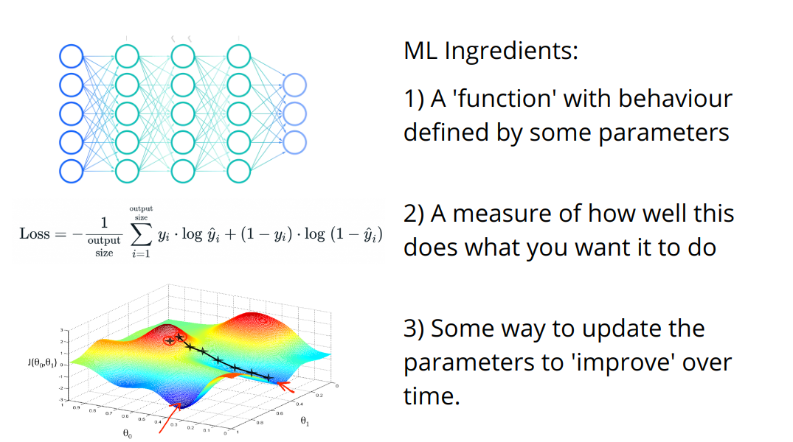
Fun with Generators and Losses
This content is adapted from a talk I gave to the MIT ‘Computer Visions’ class. I’ll link the recording if that get’s released, but in the meantime here is a different variant I recorded that includes a notebook run-through which should explain most of the code here.
We spoke about how deep learning relies heavily on one key idea: optimization:
We’re going to apply this mindset to the task of creating imagery in creative ways. To this end, we’ll explore a number of different ‘generators’ (each of which create an image from some set of parameters) and a number of ‘losses’ (which try to measure how ‘good’ the generated images are by some measure). And then we’ll play with combining different generators and losses to achieve different outputs.
These will be introduced one by one, but I’ve tried to make them as interchangeable as possible so that you can swap in or combine any of these building blocks for any of the demos. And at the end there’s a template for you to build your own final custom image generation tool and some hints for ideas to explore.
# A lot of this will be doable on CPU but slow enough that GPU is preferrable
device = torch.device('cuda:0' if torch.cuda.is_available() else 'cpu')Our First Generator: Raw Pixels
What if we just optimize some pixels directly? An image is now represented by a number of parameters (the raw RGB values). This should be a good test case, and a chance to think about how we want to frame our Generators going forward.
We need access to the parameters we can tweak, and a way to get the output.
The best way I know of is to lean on the machinery PyTorch has for neural networks by inheriting from the nn.Module class. nn.Parameter() makes a tensor that automatically has gradient tracking set up, and all parameters created this way can be accessed with the parameters() function of our generator - which saves us needing to write that ourselves.
We specify how we’d like to produce an output by defining the forward method. This lets us use our new object as a function - when we run im = gen() we’re actually saying im = gen.forward().
This might seem slightly overkill for this first example, but let’s just check it out and see how it works:
gen = PixelGenerator(128)
im = gen() # Get the output of the generator (the image)
print(f'Output shape: {im.shape}')
tensor_to_pil(im) # View itOutput shape: torch.Size([1, 3, 128, 128])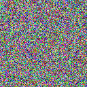
Inspecting the parameters:
[p.shape for p in gen.parameters()][torch.Size([1, 3, 128, 128])]There we go. Hopefully this will become useful in a second.
Our First Loss: Mean Squared Error
We’ll take the difference between an image and a target and square it.
# Make a target image
target_image = torch.zeros(1, 3, 128, 128)
target_image[:,1] += 1 # Set the green channel to all ones
tensor_to_pil(target_image) # View it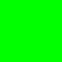
# Create a loss function with this as the target
mse_loss = MSELossToTarget(target_image, size=128)# Calculate the loss between this and the output of a generator
gen = PixelGenerator(128)
im = gen()
mse_loss(im) # We get a single measure with a way to trace the gradients backwardtensor(0.3330, grad_fn=<MeanBackward0>)Q: Does that number make sense? What would the theoretical prediction be?
Optimization
We want to tweak the parameters of our generator to make the loss (derived from the output) lower. Here’s how we might do this in PyTorch:
# Set a target - here a green image as in the previous example
target_image = torch.zeros(1, 3, 128, 128)
target_image[:,1] += 1
# Make a loss function based on this target
mse_loss = MSELossToTarget(target_image, size=128)
# Set up our generator
gen = PixelGenerator(128)
# Set up an optimizer on the generators parameters
optimizer = torch.optim.Adam(gen.parameters(), lr=1e-2)# get the generator output
im = gen()
# find the loss
loss = mse_loss(im)
# Reset any stored gradients
optimizer.zero_grad()
# Calculate the gradients
loss.backward()
# Print the loss
print(loss.item())
# Update the generator parameters to reduce this loss
optimizer.step()0.335597962141037Re-run the above cell a number of times, and use the following cell to see the current output:
tensor_to_pil(gen()) # Generate and view an image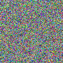
It gets greener over time - and the loss goes down. Hooray! Let’s define some new generators and loss functions and then make a clean version of this optimization code that runs in a loop so we don’t need to keep re-running a cell!
Next Generator: ImStack
ImStack is a library I made to represent images as a ‘stack’ of tensors of different sizes. The intuition here is that the lowest level can incorporate the large shapes and higher layers can capture fine details. When optimizing it can be useful to have a few parameters that have a large effect on the output - this can allow a cleaner gradient signal than if each pixel is independant.
This ‘generator’ just wraps an imstack. Note that it is the same as the pixel_generator except that we have a few extra possible arguments when creating one - for example we can initialise it with an input image (which we’ll try soon).
gen = ImStackGenerator(size=128, n_layers=4, base_size=16)
im = gen()
print(f'Output shape: {im.shape}')
print(f'Parameter shapes: {[p.shape for p in gen.parameters()]}')
tensor_to_pil(im)Output shape: torch.Size([1, 3, 128, 128])
Parameter shapes: [torch.Size([3, 16, 16]), torch.Size([3, 32, 32]), torch.Size([3, 64, 64]), torch.Size([3, 128, 128])]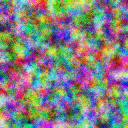
Breaking down the layers in the stack:
gen.imstack.plot_layers()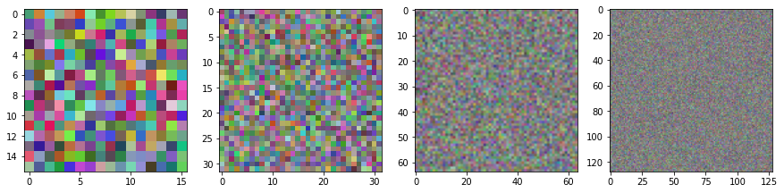
You can explore tweaking the base_size, n_layers and scale parameters to see how they affect the look of the initial (random) output and the total number of parameters.
Style Transfer
Now we’re going to try a classic application of pretrained models for artistic purposes: style transfer.
Extracting features from a pretrained model
Pytorch has definitions of many common model architectures, and ways for loading pre-trained versions of them. In this case, we go for a small, older architecture called VGG16 trained on Imagenet (a dataset with >1M across 1k classes):
# Load a pretrained model:
vgg16 = models.vgg16(weights=models.VGG16_Weights.IMAGENET1K_V1).to(device)
vgg16.eval()
vgg16 = vgg16.featuresim = torch.rand(1, 3, 128, 128).to(device) # A random image for demo
feats = calc_vgg_features(vgg16, im) # The activations of the specified layers
[f.shape for f in feats] # See the shapes of the returned features[torch.Size([1, 3, 16384]),
torch.Size([1, 64, 16384]),
torch.Size([1, 128, 4096]),
torch.Size([1, 256, 1024]),
torch.Size([1, 512, 256]),
torch.Size([1, 512, 64])]You can see that from an input image we’ve got a bunch of features, one for each specified layer. We will use these for the style and content losses.
Content Loss/Perceptual Loss
Remember our picture of a CNN: 
We spoke about how early layers tend to capture edges and textures, while later layers aggregate these smaller features into more complex ones.
We can exploit this to try and focus on the broad ‘content’ of an image in a way that is robust to small changes to texture or color. To achieve this, we’ll look only at activations from some deeper layers, in this case specified by content_layers = [14, 19]. You can print the network description and pick a few - see how changing them affects things!
# print(vgg16)content_loss = ContentLossToTarget(im)
content_loss(torch.rand(1, 3, 64, 64).to(device))tensor(2.4038, device='cuda:0', grad_fn=<DivBackward0>)# TODO: handle VGG16 when in other notebooks!We won’t do a demo with just this loss, but feel free to experiment with it after you’ve seen a few of the upcoming demos. What happens when you start from random noise and optimise with just content loss to a target image - does it perfectly re-produce the target? What about intermediate stages - what kinds of feature appear first?
Style Loss (OT version)
In a similar way, we want to capture style features. We mentioned that these will be better described by earlier layers, but there is a hitch: we want the styles of a target image, but not necessarily in the same places (otherwise we’d just get the whole picture!). So we need some way to remove the spatial component and just focus on the relative mix of colours, textures etc.
There are a few approaches. Most tutorials will use a gram-matrix based approach (which works fine) but I recently heard of a potentially better approach using ideas of optimal transport via this great video. We’ll implement both and you can compare the two for yourself :)
Both give super large loss figures by default, so I’ve included a scale_factor argument to tame the values a little.
# Create and test a version of this loss
style_loss = OTStyleLossToTarget(im)
style_loss(torch.rand(1, 3, 64, 64).to(device))tensor(10.4530, device='cuda:0', grad_fn=<MulBackward0>)# Testing...
style_loss = GramStyleLossToTarget(im, vgg16=vgg16)
style_loss(torch.rand(1, 3, 64, 64).to(device))tensor(10.6278, device='cuda:0', grad_fn=<MulBackward0>)# Create and test a version of this loss
style_loss = VincentStyleLossToTarget(im, vgg16=vgg16)
style_loss(torch.rand(1, 3, 128, 128).to(device))tensor([[5.7033]], device='cuda:0', grad_fn=<MulBackward0>)New Generator: SIREN
SIREN represents an image in an interesting way, using a bunch of sinusiodal functions in a network. Anyone with some signals processing background can probably guess why this seems interesting.
We’ll wrap a library that does all the hard work for us, but just for curiosity’s sake we can at least look at the building blocks, starting with the activation function:
gen = SirenGenerator(size=128)
im = gen()
print(f'Output shape: {im.shape}')
print(f'Parameter shapes: {[p.shape for p in gen.parameters()]}')
tensor_to_pil(im)Output shape: torch.Size([1, 3, 128, 128])
Parameter shapes: [torch.Size([64, 2]), torch.Size([64]), torch.Size([64, 64]), torch.Size([64]), torch.Size([64, 64]), torch.Size([64]), torch.Size([64, 64]), torch.Size([64]), torch.Size([64, 64]), torch.Size([64]), torch.Size([3, 64]), torch.Size([3])]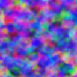
# TODO copy in and explain the rest of the code from https://colab.research.google.com/drive/1bsboh2GCxUwdzSmSg9AeCEaKKfW-hd74#scrollTo=wh8JQDX4izqN?What is neat here is that the output of the network is a function of x and y coords - we can evalluate this function at any resolution! No nasty pixels here. We can also control the number of parameters by chanigng the number and size of the layers. For example, here are two versions and the corresponding total number of parameters:
# The default
gen = SirenGenerator()
print('Number of parameters in default net:', sum([p.numel() for p in gen.parameters()]))
# A smaller version
gen = SirenGenerator(dim_hidden=16, num_layers=3)
print('Number of parameters in mini version:', sum([p.numel() for p in gen.parameters()]))Number of parameters in default net: 17027
Number of parameters in mini version: 643Since these networks can be quite small, and run once per pixel at whatever size you want to generate, they are perfect for running as compute shaders. For eg, I trained a SIREN network with CLIP and turned it into a shader here: https://www.shadertoy.com/view/flGSDD (animating some of the parameters for a cool effect).
Final Generator: Bokeh!
I’m going to show one final generator here as a demo of how you can get more creative with things like this. I wanted to make images with a small number of shapes, and while playing around got the idea of summing gaussians to get blurry blobs of different colours.
What are the parameters? The location, color, intensity and size of eah blob.
How do we render this in a way that is differentiable? It’s a little tricky, but to make it easier I did something to make any deep learning researcher cringe: I wrote a for loop. As in, for each dot: ... We don’t like things like this because GPUs are good at doing things in parallel! But hacky as it is, it works! You don’t have to do everything perfectly ;)
This code isn’t itself very interesting or worth copying, but hopefully it does highlight the more general idea: hack things together and have fun!
# Create one with 100 blobs
d = DotGenerator(100)
gen = DotGenerator(size=256)
im = gen()
print(f'Output shape: {im.shape}')
print(f'Parameter shapes: {[p.shape for p in gen.parameters()]}')
tensor_to_pil(im)Output shape: torch.Size([1, 3, 256, 256])
Parameter shapes: [torch.Size([2, 100]), torch.Size([100]), torch.Size([100]), torch.Size([3, 100]), torch.Size([100])]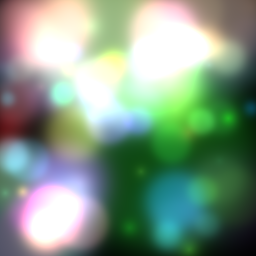
You’ll need to tweak parameters to keep the image looking nice with larger sizes or different numbers of dots, but at least this does roughly what we wanted. Inpecting the parameters you’ll see we have a few for each dot (100 dots here):
https://teia.art/sparkles_jw has examples of some animations made with this same idea…
Final Loss: CLIP
OK, the final loss function is going to feel like a super-power. What if we want to just describe what we want in text?
Enter CLIP. Remember: CLIP maps images and text to the same space, so we can compare them. We’ll load a CLIP model and test this for ourselves for a few mini demos before turning this into another loss function we can use to guide generation.
Text and image similarity (show use for one-shot classification and search)
Text or image (or multiple) as prompts
#@title load a clip model
# A nice small model (B='base') - good for quick tests and smaller download:
clip_model, _, preprocess = open_clip.create_model_and_transforms('ViT-B-32-quickgelu', pretrained='laion400m_e32')
# A medium one (L='large'):
# clip_model, _, preprocess = open_clip.create_model_and_transforms('ViT-L-14', pretrained='laion2b_s32b_b82k')
# A massive one (H='huge') that needs lots of RAM but might generate better images?:
# model, _, preprocess = open_clip.create_model_and_transforms('ViT-H-14', pretrained='laion2b_s32b_b79k')
# print(preprocess)
preprocess = T.Compose([
T.Resize(size=224, max_size=None, antialias=None),
T.CenterCrop(size=(224, 224)),
T.Normalize(mean=(0.48145466, 0.4578275, 0.40821073), std=(0.26862954, 0.26130258, 0.27577711))
])
clip_model.to(device)
# We don't want to train CLIP at all so setting requires_grad=False everywhere
# Probably unnecessary but rather safe than sorry :)
clip_model.eval();
for p in clip_model.parameters():
p.requires_grad = False# One shot classification demo
# Load an image
cat_im = pil_to_tensor(Image.open('cat.jpeg')).to(device)
# Encode the image with CLIP
image_embed = clip_model.encode_image(preprocess(cat_im))
print('Image embed shape:', image_embed.shape)
# Encode some labels with CLIP
tokenized_text = open_clip.tokenize(["a diagram", "a dog", "a cat"]).to(device)
target_embeds = clip_model.encode_text(tokenized_text)
print('Texts embed shape:',target_embeds.shape) # One for each label
# Find the similarity to each
torch.nn.CosineSimilarity()(image_embed, target_embeds)Image embed shape: torch.Size([1, 512])
Texts embed shape: torch.Size([3, 512])tensor([0.1011, 0.1522, 0.2708], device='cuda:0')We see a higher similarity for the label ‘a cat’ vs ‘a dog’ and ‘a diagram’ is the lowest’
We can flip this around to do image search. Given a load of images, we embed a text query and find the image that is the best match. This could be a fun exercise to try ;)
Using it as a loss
We can look at the similarity between the CLIP embedding of a generated image and one or more CLIP embeddings of images or text we’re feeding in as targets.
Let’s look at this in action:
# Create a generator and get an output im
gen = SirenGenerator(size=128).to(device)
gen.to(device)
im = gen()
# Embed this with CLIP
with torch.no_grad():
image_embed = clip_model.encode_image(preprocess(im))
print(image_embed.shape)
# Embed some target texts
with torch.no_grad():
tokenized_text = open_clip.tokenize(["a blue cat", "A cat picture"]).to(device)
target_embeds = clip_model.encode_text(tokenized_text)
print(target_embeds.shape)
# I wrote clip_loss_embeddings to take an image embed and multiple target embeds,
# and return the average loss across the different targets:
clip_loss_embeddings(image_embed, target_embeds)torch.Size([1, 512])
torch.Size([2, 512])tensor(1.0452, device='cuda:0')Making our neat loss class It helps to make multiple variations of the generated image so CLIP doesn’t see the exact same thing each time - hence the make_cutouts bit here. More cutouts => cleaner loss signal but more memory usage. You can explore this or just go with the defaults.
# Testing...
clip_loss_fn = CLIPLossToTargets(text_prompts=['A cat'], image_prompts=[im], clip_model=clip_model)
clip_loss_fn(torch.rand(1, 3, 64, 64).to(device))tensor(0.5813, device='cuda:0')Your Turn!
I’ve made a little function for you that takes a generator, a list of losses (and optional weights for each) and some extra parameters and optimises the parameters of the generator for a given number of steps.
Your task: play around combining the different building blocks we made today, and add some of your own! Perhaps a loss that encourages a specific average color, or a generator that just tweaks the hue and brightness of an input image.
# EG1 SIREN + CLIP
gen = SirenGenerator().to(device)
clip_loss_fn = CLIPLossToTargets(text_prompts=['A watercolor painting of a rose'])
optimise(gen, [clip_loss_fn])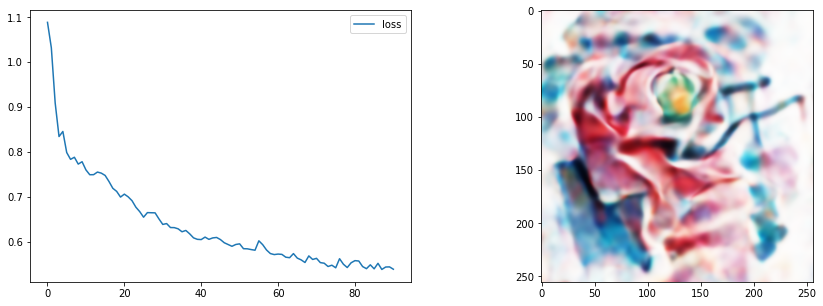
We only update the image display every display_every steps to save time. Images are also saved to steps/ every save_every steps - nice if you want to make a video showing the process or something. Set this to 1000 or something to skip that part (makes things a little faster).
#@title style_image
style_image = pil_from_url("https://i.pinimg.com/originals/c3/b4/38/c3b438401bab3e91b487cd30309224f7.gif", size=(512, 512)).convert('RGB')
style_image.resize((128, 128)) # Small for preview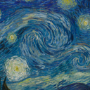
content_image = pil_from_url("https://images.pexels.com/photos/156934/pexels-photo-156934.jpeg?auto=compress&cs=tinysrgb&w=1260&h=750&dpr=1", size=(512, 512))
content_image.resize((128, 128)) # Small for preview#@markdown EG2 Style + content loss with DotGenerator
gen = DotGenerator(size=256, device=device)
style_loss_fn = OTStyleLossToTarget(pil_to_tensor(style_image).to(device))
content_loss_fn = ContentLossToTarget(pil_to_tensor(content_image).to(device))
loss_functions = [style_loss_fn, content_loss_fn]
loss_weights = [1, 15] # More weight on the content loss
optimise(gen, loss_functions, loss_weights=loss_weights, save_every=1000)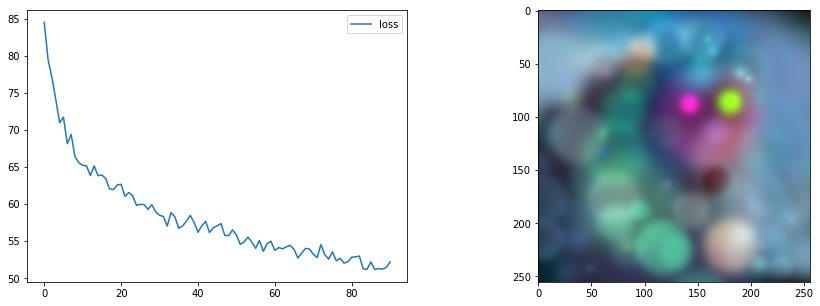
#@markdown EG3 More control
# Parameters of the imstack tweaked
gen = ImStackGenerator(size=512,base_size=8,n_layers=3,scale=4,layer_decay = 0.3).to(device)
# A custom optimiser
opt = torch.optim.AdamW(gen.parameters(), lr=0.05,
weight_decay=1e-4) # Weight decay for less extreme values
# Loss function
clip_loss_fn = CLIPLossToTargets(text_prompts=['A watercolor painting of a yellow flower'],
n_cuts=64) # More cuts for smoother loss signal
# Tweak number of steps and use our custom optimiser
optimise(gen, loss_functions=[clip_loss_fn],
optimizer=opt, n_steps=60)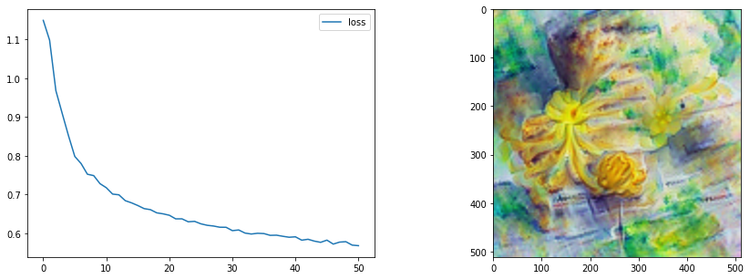
# TODO real nice style transfer example?style_loss_fn = VincentStyleLossToTarget(pil_to_tensor(style_image).to(device), size=512, style_layers = [3, 6, 9, 11])
content_loss_fn = ContentLossToTarget(pil_to_tensor(content_image).to(device))
# The pixels we'll optimise
gen = PixelGenerator(512, init_image=content_image).to(device)
# The optimizer - feel free to try different ones here
opt = torch.optim.AdamW(gen.parameters(), lr=0.1, weight_decay=1e-6)
optimise(gen, loss_functions=[style_loss_fn, content_loss_fn],
optimizer=opt, n_steps=60)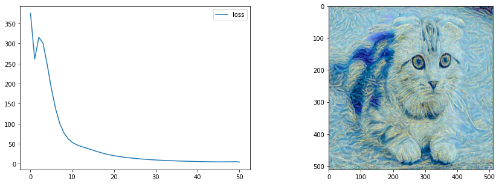
tensor_to_pil(gen())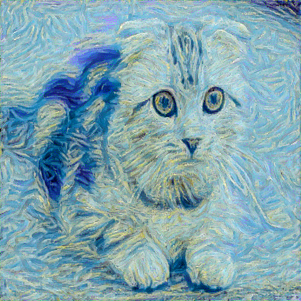
TODO review, check exports work…
TODO video and more prose explaining
TODO move optimize func higher so can demo as we make generators
TODO integrate demo into lesson 2
Ideas
Can you get cool-looking images with a really small SIREN network? Can you get a nice-looking style transfer demo working? Can you implement a loss function that forces a specific palette of colours? Or a color gradient across the image? Can you chain these, first optimising towards one target then another (hint: just re-use a generator and call optimise again with different loss functions!). For eg SIREN to an image (via MSE) then to a CLIP prompt to tweak it. Advanced: Can you add new generators? One based on ‘Deep Image Priors’ perhaps, or using something like VQGAN and optimizing the latents which are then decoded by the VQGAN decoder to get an output image. Can you think of a loss that would avoid noisy images? Hint: look up ‘TV Loss’ How about a loss that penalizes over-saturated colours? How about a generator that can only make black and white images? How would you make a generator that created ‘seamless’ images to use in combination with CLIP? Advanced: What about using PyTorch3D’s differentiable rendering to optimise the vertices of a shape or the texture of a 3d model to match a style or CLIP prompt?
Page stats: Total Hits:  Page visitors:
Page visitors: